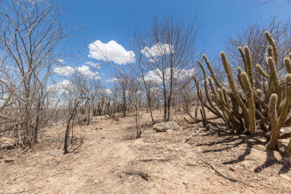

A Caatinga é um bioma exclusivamente brasileiro, ocupando, aproximadamente, uma área de 734.478 km2, que corresponde a cerca de 70% da Região Nordeste e 11% do território nacional. O nome “Caatinga” possui origem tupi-guarani e significa “floresta branca”. Essa denominação representa as características da vegetação desse ecossistema, cujas folhas caem no período da seca.
A Caatinga apresenta diversas particularidades, principalmente em relação à adaptação climática das plantas e animais. Esse bioma é afetado por secas extremas e períodos de estiagem, característicos do clima semiárido. Por essa razão, a vegetação precisou desenvolver mecanismos de sobrevivência em razão da pouca disponibilidade de água. A fauna é bastante diversificada e também é marcada pelas adaptações ao clima, como as recorrentes migrações nos períodos de estiagem.
A Caatinga apresenta diversas particularidades, principalmente em relação à adaptação climática das plantas e animais. Esse bioma é afetado por secas extremas e períodos de estiagem, característicos do clima semiárido. Por essa razão, a vegetação precisou desenvolver mecanismos de sobrevivência em razão da pouca disponibilidade de água. A fauna é bastante diversificada e também é marcada pelas adaptações ao clima, como as recorrentes migrações nos períodos de estiagem.
O clima que compreende a região da Caatinga é o tropical semiárido. Esse clima é marcado por longos períodos de estiagem, isto é, sem chuvas.
A vegetação da Caatinga apresenta características de adaptação ao longo período de seca e grande diversidade de espécies vegetais, muitas delas endêmicas (desenvolvem-se apenas nessa região). A vegetação da Caatinga apresenta três estratos:
Cumaru: espécie de planta adaptada à maior parte dos solos, especialmente aos solos arenosos e profundos. Apresenta caules que soltam lascas finas, deixando à mostra a camada mais nova, que possui coloração verde. Essa espécie corre risco de ser extinta por causa da grande exploração.
Ipê-roxo: espécie de planta cujo nome representa a coloração das suas flores. Durante a sua floração, a planta perde as folhas, ficando em destaque as flores, que formam densos buquês. Por causa da grande procura dessa espécie para ornamentação, dada a sua exuberância, está ameaçada de extinção.
Macambira: espécie de bromélia que se desenvolve sob a exposição do sol. Apresenta folhas suculentas, que são utilizadas para alimentação de gado e também para produção de farinha e pirão. Seu talo é bastante utilizado para revestir telhados.
| Pássaro | Mamífero | Réptil |
|---|---|---|
| Ararinha-azul | Tatu-peba | Iguana-verde |
| Jandaia-coquinho | Jaguatirica | Calango-de-cauda-verde |
| Carcará | Tamanduá-mirim | Cascavel |
| Bem-te-vi | Sagui-de-tufos-brancos | Jacaré-de-papo-amarelo |